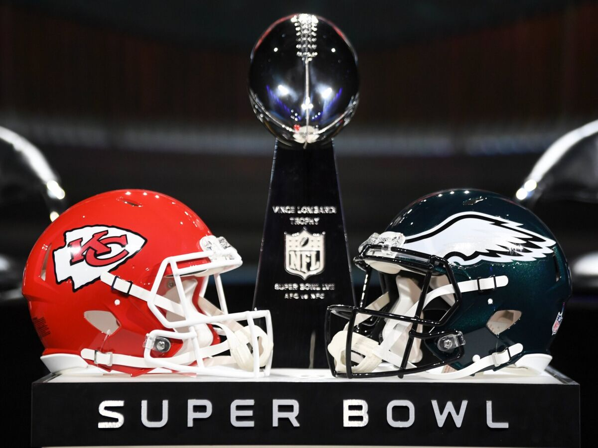
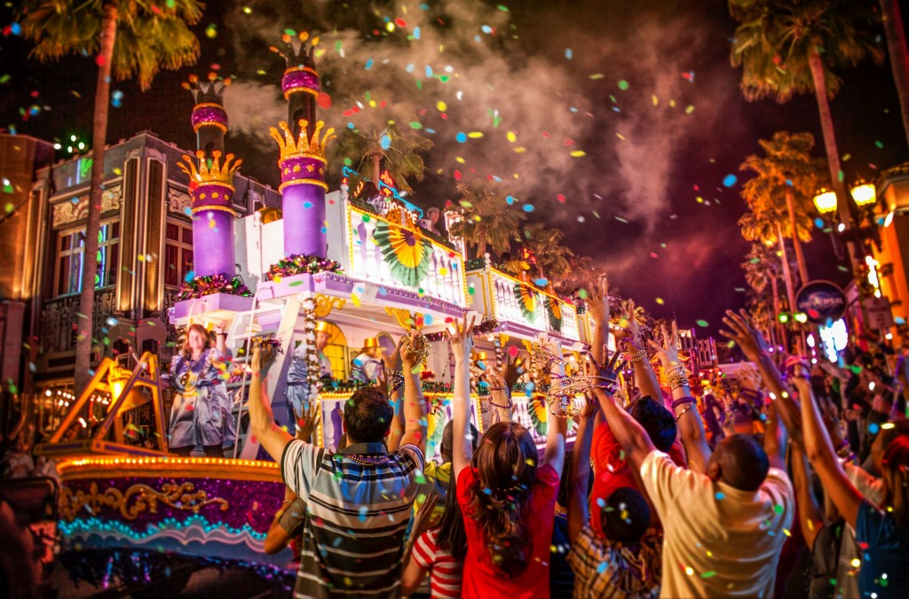
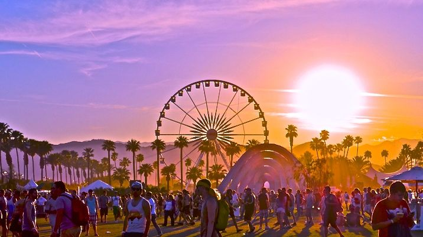

| País | cidades | Eventos Anuais |
|---|
Super BowlO Super Bowl é o evento esportivo mais importante dos Estados Unidos, conhecido não apenas por ser a final do campeonato de futebol americano da NFL (National Football League), mas também por suas apresentações musicais, comerciais marcantes e grande espetáculo de entretenimento. A cada ano, duas equipes se enfrentam em uma partida que atrai uma audiência global imensa. O Super Bowl é muito mais do que apenas um jogo esportivo. A final é precedida por uma semana de festividades, eventos e conferências de imprensa. O halftime show (show do intervalo) é uma das atrações mais aguardadas, com apresentações de artistas de renome que atraem milhões de telespectadores. Além disso, os comerciais exibidos durante o Super Bowl tornaram-se famosos por sua criatividade e alto custo. A final do Super Bowl tem um grande impacto na cultura popular dos Estados Unidos e muitas vezes aborda questões sociais, políticas e culturais relevantes. O evento reúne famílias, amigos e comunidades para assistir ao jogo, seja em casa, em bares ou em festas temáticas. A atmosfera de competição, os momentos emocionantes do jogo e as surpresas do halftime show fazem do Super Bowl um dos eventos mais esperados e assistidos em todo o país. |  |
|---|
Mardi GrasO Mardi Gras é um dos festivais mais emblemáticos e animados realizados em New Orleans, Louisiana. Também conhecido como o "Carnaval de Nova Orleans", o Mardi Gras é uma celebração colorida e extravagante que ocorre nos dias que antecedem a Quarta-Feira de Cinzas, marcando o final da temporada de festas antes do período da Quaresma. O festival é famoso por seus desfiles espetaculares, onde carros alegóricos decorados desfilam pelas ruas da cidade, acompanhados por bandas de música e grupos de dança. As pessoas nas ruas se vestem com trajes vibrantes e máscaras elaboradas, criando uma atmosfera festiva e animada. As tradições do Mardi Gras também incluem o lançamento de colares de contas coloridas e outras bugigangas para a multidão durante os desfiles. Os krewes, organizações responsáveis por planejar e executar os desfiles e festas, competem para criar os desfiles mais impressionantes e temáticos. Cada krewe tem seu próprio estilo e temas únicos para seus desfiles, adicionando uma variedade encantadora à celebração. Além dos desfiles, o Mardi Gras em Nova Orleans é conhecido por suas festas e comemorações animadas. O French Quarter, o bairro histórico da cidade, é um ponto focal da festa, com bares, clubes e restaurantes cheios de foliões celebrando a temporada. O Mardi Gras também está associado à música jazz, que é uma parte fundamental da cultura de Nova Orleans. Bandas de rua e performances ao vivo contribuem para a energia e o ritmo do festival, transformando a cidade em uma vibrante celebração de música, dança e alegria. Em resumo, o Mardi Gras em Nova Orleans é uma festa extravagante e emocionante que celebra a vida, a música e a cultura desta cidade única. Os desfiles coloridos, as festas animadas e o espírito de comunidade tornam o Mardi Gras uma experiência inesquecível para todos que participam. |  |
|---|
Coachella Valley Music and Arts FestivalO Coachella Valley Music and Arts Festival, comumente conhecido como Coachella, é um dos maiores e mais renomados festivais de música e arte do mundo, realizado anualmente no deserto de Indio, na Califórnia. O festival atrai multidões de entusiastas da música e da cultura de todo o globo. O Coachella é famoso por sua diversidade musical, abrangendo gêneros que vão desde o pop e o rock até o hip-hop, eletrônico e indie. Acontece ao longo de dois fins de semana consecutivos, apresentando uma programação impressionante de artistas consagrados e emergentes, que se apresentam em vários palcos espalhados pelo local. Além da música, o Coachella também valoriza as artes visuais e a criatividade. O festival exibe instalações de arte inovadoras e interativas, proporcionando aos participantes uma experiência única e imersiva. As esculturas, pinturas e outras formas de expressão artística acrescentam uma dimensão extra ao evento. A moda também desempenha um papel importante no Coachella, com muitos frequentadores adotando estilos boêmios e ousados. O festival se tornou um palco para as tendências da moda e da cultura jovem. O ambiente do Coachella é marcado pela vibração festiva e pela sensação de comunidade entre os participantes. As pessoas acampam no local ou se hospedam nas proximidades para aproveitar ao máximo os dias de música e arte. A comida também é uma parte integral do festival, com diversos food trucks e estandes que oferecem uma ampla variedade de opções culinárias. Em resumo, o Coachella Valley Music and Arts Festival é um evento cultural e musical de destaque, onde a música, a arte, a moda e a comunidade se fundem em um ambiente desértico único. Sua atmosfera vibrante e sua capacidade de atrair artistas e fãs de todo o mundo o tornam uma experiência memorável para todos os envolvidos. |  |
|---|
Super Bowl
|
|---|